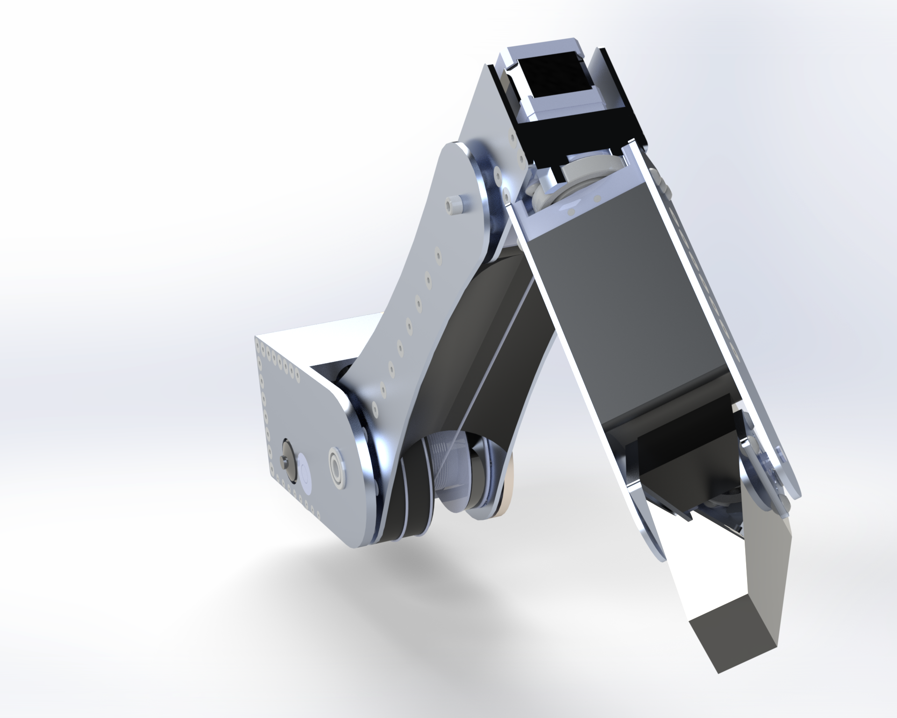
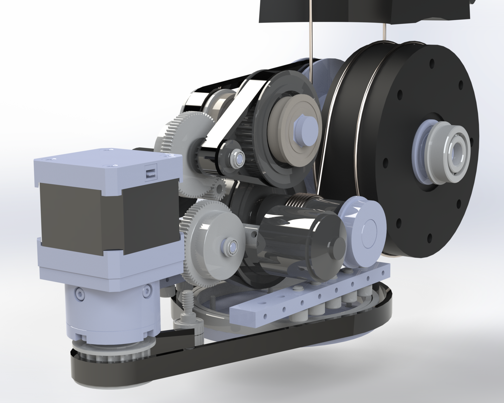

Goal: Create a 5-axis robotic arm powered buy brushless motors, and stepper motors. The first two joints in the arm are brushless due to the higher power density (power/volume). Closer to the end effector the arm changes to stepper motors.This arm was purely a challenge and will not be manufactured. Click here to check out a more cost-effective arm.
The two joints powered by brushless motors are cable driven, this was done to eliminate backlash from the final stage reduction (For more info on cable drives click here). Prior to the Cable driven output belts are heavily leveraged to further limit backlash. The first stage reductions are geared. Gears are generally not suitable for limiting backlash, but the reduction limits that slop by reducing it in the later stages. The brushless motors free speed at 14.8V is 13024 rpm, with a stall torque of 1.088. The lower elbow joint is running on a 77.8:1 gear ratio. This gives us a stall torque output of 84.6 N/m and at full speed 90 degrees can be traveled in roughly .1s. The joint at the top of the image, is powered by the same motor and is controlled by a 54:1 gear ratio.
